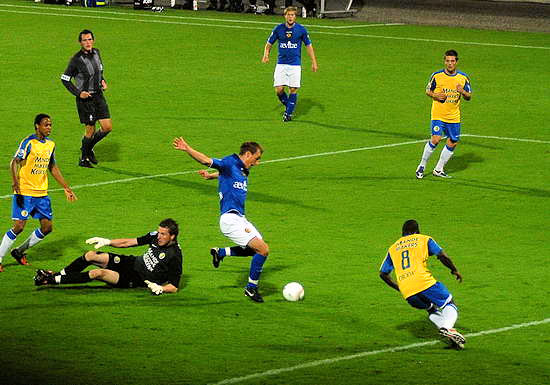
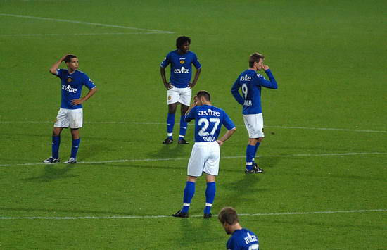

De 0-1 door Janssen.
foto: sv-online

4-1 eindstand. Schande!
foto: sv-online
Roda JC wekte al de indruk de wedstrijd en de drie winstpunten in de tas te
hebben na het openingsdoelpunt in de 17e minuut. Willem Janssen frommelde de
bal binnen na een steekpassje van Anouar Hadouir. De Kerkraadse ploeg had
die fase veel meer balbezit, viel ook wel aan maar deed dit in traag tempo
en bovenal slordig. RKC kon meermalen uitbreken, overigens zonder veel
gevaar te stichten. Toch werd het plotseling gelijk. Op een strakke voorzet
van Benjamin de Ceulaer werd Fouad Idabdelhay slecht gedekt. De van NAC
overgekomen spits kopte hard langs Bram Castro, 1-1.
Roda JC mocht zich de gelijkmaker zelf aanrekenen. De achterstand bij rust
zelfs nog veel meer. Invaller Charlison Benschop kon in de blessuretijd van
de eerste helft vrij inknallen nadat Eric Addo over zijn eigen benen was
gestruikeld en Pa-Modou Kah geen rugdekking gaf. De voorsprong van 2-1 was
voor het puntloze RKC een dit seizoen ongekende luxe.
In zeven eredivisieduels sinds de promotie scoorde RKC slechts drie keer.
Deze productie werd in 56 minuten tegen Roda JC verdubbeld. Derk Boerrigter
toonde de verdedigende zwakte bij de Limburgers ondubbelzinnig aan met een
droge knal in de verste hoek, 3-1. Daarmee was de eerste overwinning binnen.
Het tegenoffensief van Roda JC leek nergens op. De counters van RKC bleken
gevaarlijker. Fred Benson schoot 4-1 in de kruising.